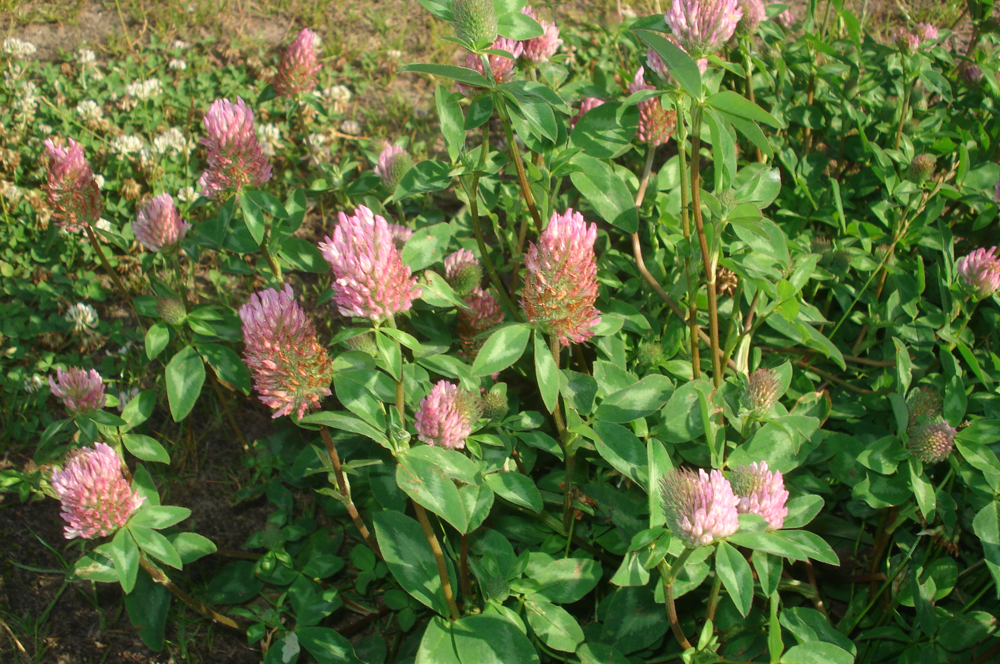

Trifolium pratense
| common name | red clover | |
| en español | trébol rojo, trébol violeta | |
| name in Āyurveda | vanamethika (वनमेथिका) | |
| plant family | Fabaceae (legume/pea/bean) | |
| parts used | fresh and dried flowers |
 from Wikimedia Commons by Sanja565658 - Own work, CC BY-SA 3.0
observations/description
dried flowers
- small, oblong, tube flowers; some calyx as well showing the inflorescence
- orange/reddish-brown, purple, white among the colors; some light green as well from leaves/sepals
- gentle, pleasant aroma, a little earthy
"Trifolium pratense", Wikipedia
- leaves are alternate, trifoliate (with three leaflets), green with a characteristic pale crescent in the outer half of the leaf
- flowers are dark pink with a paler base, produced in a dense inflorescence, and are mostly visited by bumblebees
distribution/conservation status
"Trifolium pratense", Wikipedia
- native to Europe, Western Asia, and northwest Africa
- naturalised in other continents, like North and South America
- red clover was brought to Argentina and Chile over 100 years ago, although it is not clear how exactly it was introduced
- has become increasingly important as a source of economic stability in Chile, which has made the need for pollinators even more important
- Bombus ruderatus (the large garden bumblebee) was also brought from Europe and has been one of the important pollinators of red clover in South America and other countries such as New Zealand
- listed as 'Least Concern' on IUCN Red List of Threatened Species
primary actions
The Yoga of Herbs, p. 139-40
- alterative, diuretic, expectorant, antispasmodic
The Modern Herbal Dispensatory, p. 292
- alterative, lymphatic, phytoestrogen
The New Age Herbalist, p. 80
- relaxant, expectorant, alterative
notes from class, 19 May 2025
- antitussive, alterative, lymphatic, diuretic, nutritive, antispasmodic
system affinities
lymphatic, respiratory, integumentary
primary uses
The Yoga of Herbs, p. 139-40
- mild blood purifier suitable for general consumption/long-term use
- pleasant taste, mildly strengthening
- can be used with children, the elderly, or in conditions of debility where stronger alteratives (e.g., echinaecea, barberry) may not be advised
- reported effectiveness with cancer in large amounts and/or with other antitumor agents
- external wash for dry/scaly skin; paste/poultice for sores that do not heal
- indicated for cough, bronchitis, skin eruptions, infections, cancer
The Modern Herbal Dispensatory, p. 292
- pleasant-tasting blood purifier
- used with other blood purifiers for skin conditions, cancer, swollen lymph glands, liver detox
- phytoestrogens block estrogen receptor sites, possibly inhibiting estrogen-dependent cancers
- indicated for spasmodic cough, whooping cough, and the cough of measles
The New Age Herbalist, p. 80
- relaxant and expectorant; useful in treating coughs, bronchitis, and whooping cough
- used to treat skin conditions like eczema and psoriasis, used for children with eczema/asthma syndrome
- has been employed in the treatment of cancer
notes from class, 19 May 2025
- moves fluid, especially lymph
- good for whooping cough, bronchitis, wheezing, dry/irritable coughs
- removes byproducts of infection, supports swollen lymph, supporting cough
- can combine with a demulcent to thin mucus, red clover will allow for easier expectoration
- can use a lot/high dose in infusion or tincture or cough syrup
energetics
The Yoga of Herbs, p. 139-40
- reduces pitta, kapha; increases vāta
- bitter flavor - pungent post-digestive effect
- cooling
The Modern Herbal Dispensatory, p. 292
- cooling, balancing
notes from class, 19 May 2025
- cooling, moistening, sweet
pharmacology
The New Age Herbalist, p. 80
- phenolic glycosides, flavonoids, salicylates, cyanogenic glycosides, coumarins
contraindications/pharmaceutical interactions/warnings
The Yoga of Herbs, p. 139-40
- few precautions, perhaps high vāta or tissue deficiency
The Modern Herbal Dispensatory, p. 292
- some recommend avoiding during pregnancy due to phytoestrogen content
preparations
The Modern Herbal Dispensatory, p. 292
- standard infusion
- dried flower, 30 g: 1 L
- tincture
- recently dried flower, 1:5, 40% alcohol
- glycerite
- dried flower, 1:8
Herbal Materia Medica, p. 37
- standard infusion
- dried flowering herb, 1:32
- strong decoction
- dried flowering herb, 1:32
The Yoga of Herbs, p. 78-9, 139-40
- hot infusion
- fresh flowers, 1:4 (strong)
- fresh flowers, 1:8 (moderate)
- cold infusion
- fresh flowers, 1:4 (strong)
- fresh flowers, 1:8 (moderate)
- decoction
- dried flowers, 1:16, reduce to 1/4 original amount
- powder
dosage
The Modern Herbal Dispensatory, p. 292
- standard infusion: 4-8 oz, 3/day
- tincture: 1-5 mL, 3/day
- glycerite: 5-10 mL, up to 3/day
Herbal Materia Medica, p. 37
- standard infusion: 4-6 oz, up to 3/day
- strong decoction: 4-6 oz, up to 3/day
The Yoga of Herbs, p. 92, 139-40
- hot infusion: 2 oz, 3/day
- cold infusion: 2 oz, 3/day
- decoction: 2 oz, 3/day
- powder: 250-1000 mg, 3/day
extra information
personal experiences/simples
tisane (1.5 tsp: 12 oz, 14 minutes), dried flowers
- fuller aroma after adding hot water, slight ironiness reminiscent of hawthorn but without those rosy floral notes
- pale golden yellow color
- tastes very acidic, similar experience to hibiscus/linden but less flavorsome
- i think i will like the macerate better, or perhaps i brewed it too long
macerate (1 tbsp: 16 oz, 12+ hours), dried flowers
- pale yellow color
- more pleasant flavor; acidity is still present but is much more balanced with the other flavors, fruitier
- flavor reminds me of linden
- feels very gentle
witchcraft
The Witch's Encyclopedia of Magical Plants, p. 82
- in England, wearing sprigs of red clover brought luck and protected against witches
- worn in a shoe as part of a love spell
- four-leafed clover considered especially lucky as a talisman
- enables the wearer to see faeires and enter the faery realm
- signified that you would meet your true love
- charm against witchcraft and evil spells
- elements: air, earth
- astrological influence: gemini, sagittarius, mercury
recipes
sources
Easely, Thomas and Steven Horne. The Modern Herbal Dispensatory (2016)
Frawley, David and Vasant Lad. The Yoga of Herbs: An Ayurvedic Guide to Herbal Medicine (1986)
Goldberg Blackthorn, Samantha. Ace of Cups Herbal Medicine and Botanical Magic Herbal School (2024)
Kynes, Sandra. The Witch's Encyclopedia of Magical Plants (2024)
Mabey, Richard et al. The New Age Herbalist (1988)
Moore, Michael. Herbal Materia Medica, Fifth Edition (1995)
"Trifolium pratense" on Wikipedia. Retrieved 8 May 2025.